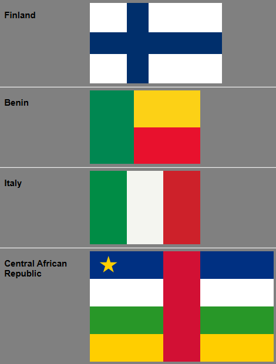
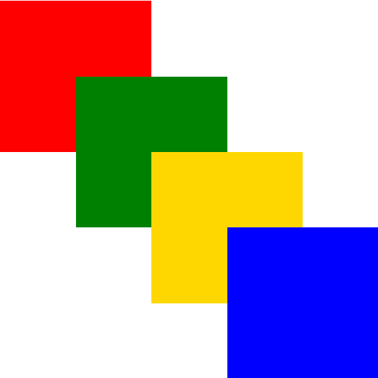
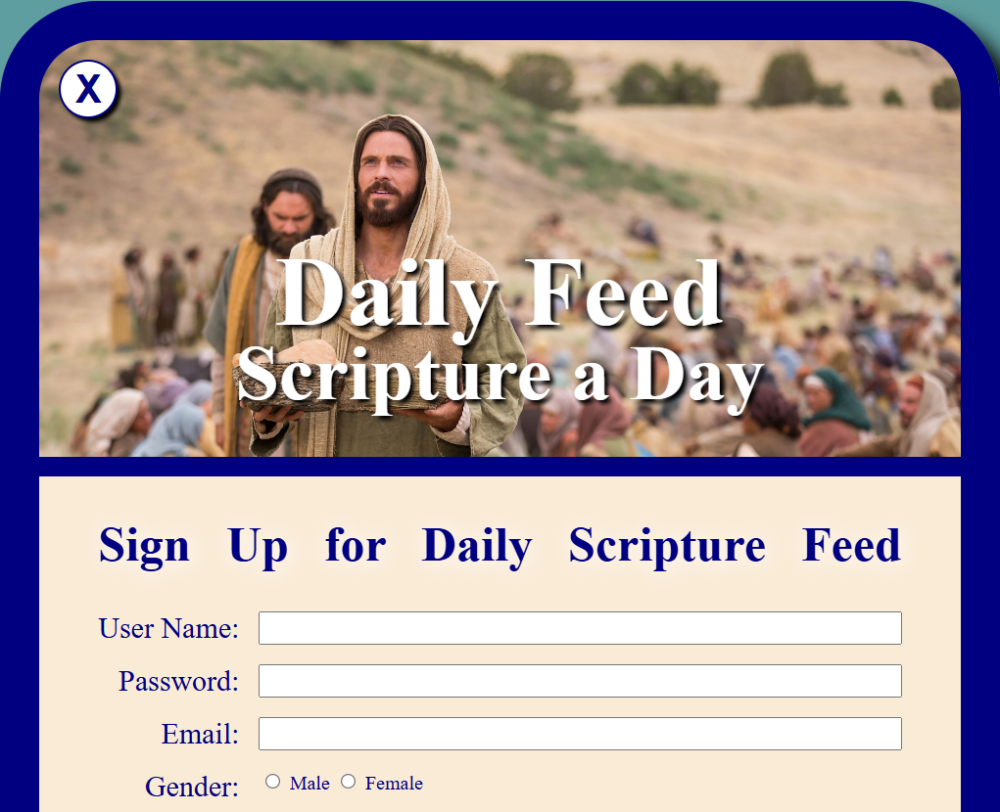

Home
WWR
ICE
About
Home
WWR
ICE
About

An ICE (In-Class Exercise) challenge is a hands-on practical activity designed to reinforce web development concepts. It typically involves downloading a starter kit or wireframe, writing and formatting code such as HTML and CSS to meet specific design requirements, and submitting the completed project for credit.
This challenge focused on writing the semantic HTML structure and CSS styling for a prophet profile card, ensuring it closely matched the provided wireframe layout. I practiced organizing content hierarchy with HTML and applying CSS box model properties and layout rules to build a clean, structured component.
For this exercise, I wrote the HTML and CSS code in apostles.html to match the layout in ApostleSpotlight_Design.png. I customized parts of the design—such as shaping the individual apostle images—and added a dynamic hover effect where the outline changes colors. I gained hands-on experience using CSS pseudo-classes like :hover for interactive styling and explored creative ways to customize geometric shapes with CSS while maintaining a cohesive design.
The goal was to use strictly CSS Grid positioning and alignment properties to style and color country flags (Denmark, Finland, and Benin) for the provided HTML elements. This exercise deepened my understanding of CSS Grid tracks, lines, and alignment tools. I also learned the structural limits of grid layouts when attempting more complex geometric flag designs like Nepal.

This exercise required editing a premade stylesheet to fix colored box layout patterns across six distinct mini-challenges without altering the underlying HTML. I mastered the nuances of CSS positioning schemes—such as relative, absolute, and fixed positioning—and learned how to leverage CSS grid and layout guides to control element placement precisely.

This task involved testing a page's performance in the browser, using a photo editor to optimize full-size images, creating smaller 200px by 300px thumbnail versions, and updating the HTML markup with the optimized sources. I learned the importance of web performance and asset optimization, specifically how compressing images and serving appropriately sized thumbnails dramatically improves page load times.
This challenge focused on styling a form in signup.html using CSS Grid to match a target design image, reviewing the embedded JavaScript inside the script element, and testing form submission. I learned how to structure complex form elements semantically, align form controls neatly using CSS Grid, and integrate basic front-end interactivity.
